Getting Started
Welcome to Amely
Hi,
It’s awesome to know that you decided to purchase Amely. No doubts, you will join our happy customers community in seconds!
You won’t make any mistake here, because our detailed documentation will guide you. Please be sure to check it out before getting started. We have outlined all kinds of necessary information and keep them easy-to-read-and-follow. Our theme is based on WordPress platform, so we assume that you have already WordPress installed and ready to go.
If you are unable to find your answer in this documentation, don’t hesitate to sign up & submit a support ticket here: ThemeMove’s Support Channel with your site’s FTP and WordPress Admin details. Our top-notch support team are extremely enthusiastic to solve your issue as soon as possible, just give them a chance.
Enjoy your time here.
Cheers,
ThemeMove.
Theme Requirements
To use Amely, you must be running WordPress 4.0 or higher, PHP 5.6 or higher, and MySQL 5 or higher. We have tested it with Mac, Windows and Linux. Below is a list of items you should ensure your host can comply with.
Check to ensure that your web host has the minimum requirements to run WordPress.
Always make sure they are running the latest version of WordPress.
You can download the latest release of WordPress from official WordPress website.
Always create secure passwords for FTP and Database.
Hosting is more secure when PHP applications, like WordPress, are running using your account’s username instead of the server’s default shared username (www or www-data). The most common way for hosting companies to do this is using PHP. Just ask your potential host if they run PHP or something similar.
Recommended PHP Configuration Limits
Many issues that you may run into such as: white screen, demo content fails when importing, empty page content and other similar issues are all related to low PHP configuration limits. The solution is to increase the PHP limits. You can do this on your own, or contact your web host and ask them to increase those limits to a minimum as follows:
Max_execution_time 180
Memory_limit 128M
Post_max_size 32M
Upload_max_filesize 32M
WordPress Knowledge Base
To install Amely – your powerful Woocommerce theme, you must have a working version of WordPress already installed. If you need help installing WordPress, follow the instructions in WordPress Codex. Below are all the useful links for WordPress information:
WordPress Codex – General info about WordPress and how to install on your server.
First Steps With WordPress – General info about multiple topics about WordPress.
FAQ New To WordPress – The most popular FAQ’s regarding WordPress.
What’s Included
When you purchase Amely from ThemeForest, you need to download the Amely files from your ThemeForest account. Navigate to your downloads tab on ThemeForest and find Amely.
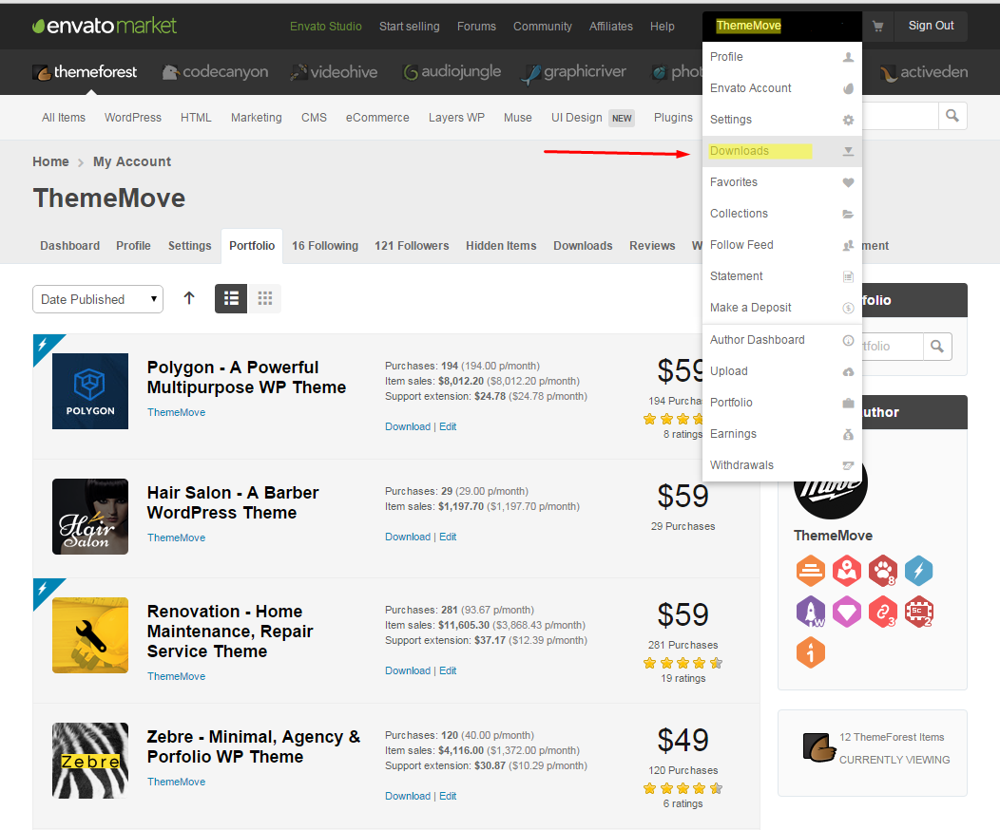Click Downloads to see these two options.
Installable WordPress file only. You can upload this file when you install the theme.
All files and documentation (full zip folder). You will need to extract and locate the installable WordPress file to upload when you install the theme.
Amely’s Support System
All of ThemeMove’s items come with 6 months of included support and free lifetime updates for your Theme. Once the 6 months of included support is up, you have the opportunity to extend support coverage up to 6 or 12 months further. If you choose to not extend your support, you will still be able to submit bug reports via email or item comments and still have access to our online documentation knowledge base and video tutorials.
Envato clarifies item support policy here.
We have an advanced, secure ticket system to handle your requests. Support is limited to questions regarding the theme’s features or issues that are related the theme. We are not able to provide support for code customizations or third-party plugins. If you need help with anything other than minor customization of your theme, we suggest enlisting the help of a developer.
How To Start Receiving Support
Step 1 – Click Here to create an account. You will need your accession which can only be received after buying the theme from Themeforest.net.
Step 2 – Once you are signed up, you need to sign into our support center with your new account.
Step 3 – Follow these steps before you submit a support ticket.
Step 4 – To create a new ticket, hit New.
See how to take your purchase code:
Hit Download then choose License Certificate & Purchase Code.
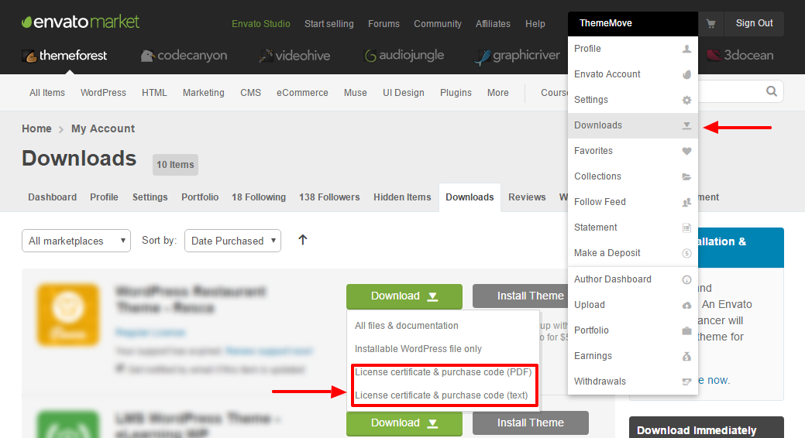Before You Submit Ticket
To help speed along your request, we require that you follow the steps below before posting a ticket in the Help Desk.
Step 1 - Please take a moment to search the Basic Troubleshooting Issues, as the answer to your question is likely already in here - nearly 80 % of all tickets opened are due to the issues described in this guide.
Step 2 – If your question or issue has not been brought up, then please open a ticket with the following information:
Your live site URL that shows the issue
Your WordPress login credentials
Did you install or update the theme? Using FTP or from the WordPress admin panel?
Error logs - if you don't know how to get them - check out this guide - Error logs - how to find them - this is necessary only if you report a bug or an issue, not general "How to" questions.
Specific browser or device involved if applicable - Operating System version( Windows 8.1, Maverick etc), the model of the device( Ipad 3, Samsung Galaxy etc.), browser version( Safari 7, IE 11) etc. and screen resolution 1600/800 1440/900 etc.
Detailed information describing the issue
Possible screenshots of the issue
Please note that in most case the support staff cannot do much without this information. So to avoid unnecessary delays please provide the information above.
Also please deactivate all the plugins that don't come with the theme, this will allow us to rule out any third party plugins conflict. We don't deactivate the plugins on a client's site, because sometimes this may cause unforeseen issues.
Installation
Theme Installation
After purchasing Amely, please download the package from ThemeForest. All you need to do is moving your mouse over your login name at the right top corner – after you log in ThemeForest, and then click Downloads.
Here you will find all the items that you have purchased. Hover to Download button next to Amely, you will see these download options:
Installable WordPress file only which you can upload when installing theme
All files & documentation (full zip folder). You will need to extract and locate the installable WordPress file to upload when installing theme
Install theme via WordPress
Step 1 - Navigate to Appearance > Themes
Step 2 - Click Add New, then click Upload Theme > Choose File
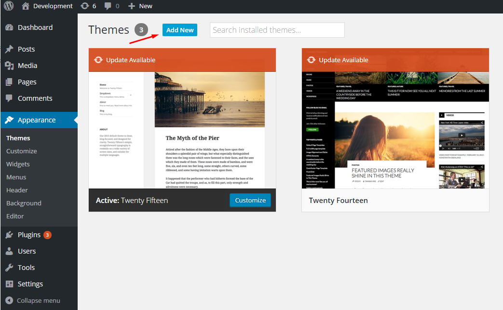 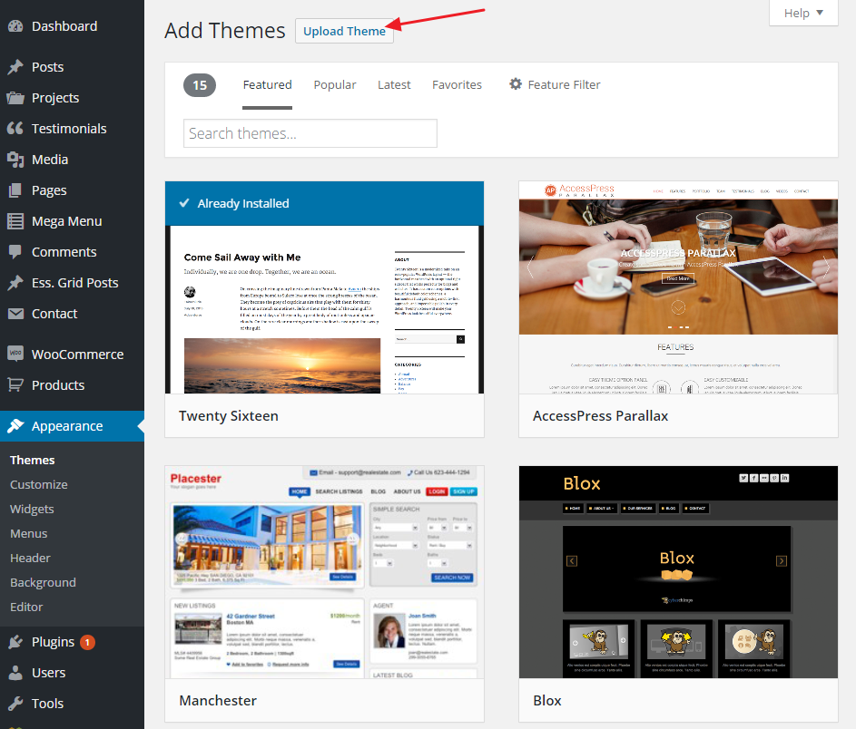 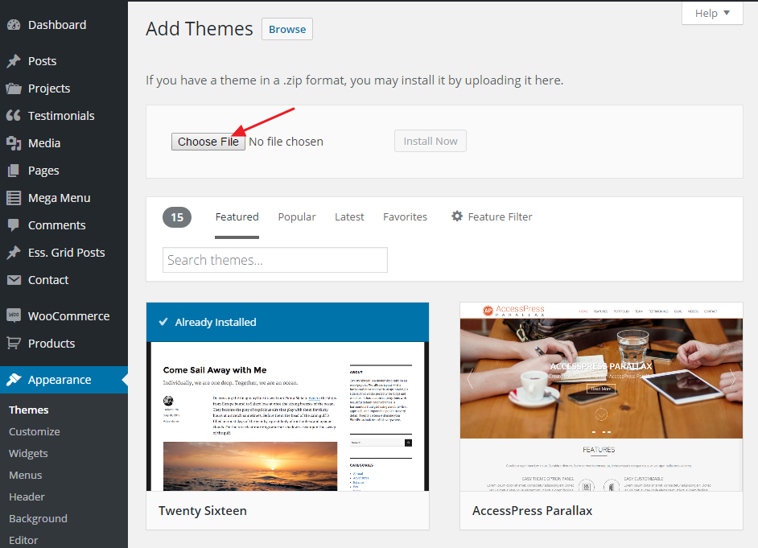Step 3 - Navigate to the .zip file on your computer, then click Install Now


Step 4 - When the installation complete, click Activate. You will be redirected to Themes page with Amely activated.


Install theme via FTP
Step 1 – Log into your server installation via FTP. You can use software such as Filezilla for this.
Step 2 – If you have downloaded Installable WordPress file only, please unzip the amely.zip file. If you have downloaded the All file & documentation package, please unzip the amely.zip file and then unzip the secondary amely.zip file which will give a Amely folder.
Step 3 – Upload the extracted amely folder to the wp-content > themes folder on the server. Make sure the folder name is ‘amely’.
Step 4 – Log in to your WordPress Dashboard and navigate to Appearance > Themes and clicking the Activate button, for the Amely theme.
Plugin Installation
Go to Insight Core page. Here you will find Install Required Plugins

You can install and activate each plugins there or you can go to Insight Core > Plugins to install and activate all of them at once. Simply check all of them (or all of required plugins and some recommended plugins you like) and from the drop down select Install, then hit Apply.

When finishing, it should look like this:

Required plugins: Insight Core, Redux Framework, WooCommerce, Visual Composer, Revolution Slider, Vafpress Post Formats UI
Recommended plugins: YITH WooCommerce Wishlist, YITH WooCommerce Compare, Contact Form 7
Plugin Configuration
Insight Core
Insight Core is a required plugin for all Thememove themes. It manages many important tasks including plugin installation, demo data import, update notification. Users will also find information of documentation and support link there.
Redux Framework
Redux is a simple, truly extensible options framework for WordPress themes and plugins. Built on the WordPress Settings API, Redux supports a multitude of field types as well as custom error handling, custom field & validation types, and import/export functionality. If you haven't tried it yet, there's no time like the present!
WooCommerce
An amazing eCommerce plugin that allows you to sell anything, beautifully. Built to integrate seamlessly with WordPress, WooCommerce is the world’s favorite eCommerce solution that gives both store owners and developers complete control.
Visual Composer
Visual Composer for WordPress is drag and drop front-end and back-end page builder plugin that will save you tons of time working on the site content. You will be able to take full control over your WordPress site, build any layout you can imagine – no programming knowledge required. Moreover, now you can choose either work on a backend or move your page building process to frontend and instantly see changes you make.
Slider Revolution
Slider Revolution is an innovative, responsive WordPress Slider Plugin that displays your content in a beautiful way. Whether it’s a Slider, Carousel, Hero Scene or even a whole Front Page, the visual, drag & drop editor will let you tell your own stories easily.
Vafpress Post Formats UI
A completely additive solution that leverages the default WordPress functionality, while improving the UI and standardizing the names and presentation of custom fields that support the various post formats.
YITH WooCommerce Wishlist
With YITH WooCommerce Wishlist you can add a link in each product detail page, in order to add the products to the wishlist page. The plugin will create you the specific page and the products will be added in this page and afterwards add them to the cart or remove them.
YITH WooCommerce Compare

YITH WooCommerce Compare plugin is an extension of WooCommerce plugin that allow your users to compare some products of your shop. All products are saved in one complete table where the user can see the difference between the products. Each product features can be set with the woocommerce attributes in the product configuration. You can also add a simple widget with the list of products the users have added, where you can manage them. Also you can simply customize the compare table with your style, by editing the specific template.
Contact Form 7
Contact Form 7 can manage multiple contact forms, plus you can customize the form and the mail contents flexibly with simple markup. The form supports Ajax-powered submitting, Captcha, Akismet spam filtering and so on.
Demo Installation
Our demo data import lets you have the whole data package in minutes, delivering all kinds of essential things quickly and simply. All you need to do is to navigate to Insight Core > Import. Hit Import this demo.

Have a cup of coffee. The process is within minutes.
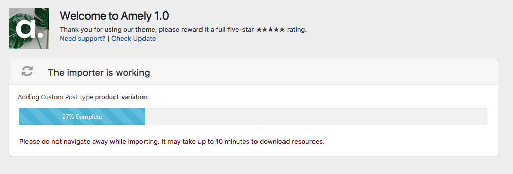When finishing, it should look like this:

Go to Setting > Reading > Front page displays and choose the page you like to be your front page then hit Save changes.

Common Installation Issues
If you run into trouble when installing Amely, please check out Common Installation Issues for solutions. If it's not there, please contact us for support.
Update
Before Updating
1. It Is Always Recommended To Backup Your Current Setup
We recommend you have a current backup of your site. Simply go to Theme Options >> Import / Export and export your backup.
2. Do Not Keep Older Copies of The Theme In WP Theme Folder
You should completely remove all previous theme folders before adding the new updated theme folder. Don't just rename the theme folder. If you rename your theme folder when you update, then the path will be no longer valid. Because WordPress stores menus and widget settings and some other settings by folder path, you will need to rename your theme folder back to what it was before, then your settings, menus, widgets will be restored. So the total renaming process has no meaning.
3. Reset Browser Cache, Server Cache And Plugin Cache
It is always recommended to reset your browser, plugin, and server cache when you update. Visual issues may happen and more often than not, its caused by caches, and they need to be emptied. Each browser allows you to remove cookies, history and other data. If your theme or ThemeMove Core version is not updated after uploading the new files, it is due to a server-side caching system. Some hosting providers have server-side cache systems installed to optimize the speed of content delivery, please clear any server-side cache or ask your host to do it. This is also true for google pagespeed setups or cloudflare setups.
4. Update Child Theme
If you have copied template files from parent theme to child theme, please make sure to revert to parent theme first to confirm if the issue exists there too. If it doesn’t, please update the templates copied to child theme with the parent theme.
5. Required & Recommended Plugins Must Be Updated
When you update the theme, you will see a notification message in your admin telling you the required and recommended plugins need to be updated. Follow the onscreen prompts to install the plugin updates. We have listed some required plugins and they have to be installed and activated for theme features to work. Make sure you are always using the most recent version of these plugins. You will be prompted to install it upon installing or updating your theme. If you dismiss the prompt or do not see it, then you can go to Plugins >> Installed Plugins >> Update Available (if have) and update the plugins there.
Update Theme
Firstly, you need to download the new theme package from your Themeforest account. Once you have the new theme package, you can choose to upload the theme via WordPress or via FTP.
1. Update theme via FTP
Step 1 – If you have downloaded Installable WordPress file only, please unzip the amely.zip file. If you have downloaded the All file & documentation package, please unzip the amely.zip file and then unzip the secondary amely.zip file which will give a Amely folder.
Step 2 – Connect to your FTP.
Step 3 – Upload the extracted Amely folder to: wp-content/themes/. Just replace existing files and folders.
Step 4 – Lastly, update the included plugins. You will see a notification message letting you know the plugins have a new version and need to be updated.
2. Update theme via WordPress
Step 1 – You need to deactivate the current Amely theme in Appearance > Themes section by simply activating a different theme. Once you activate a different theme, you can delete the Amely.


Step 2 – Retrieve the tm_amely.zip file from your new Themeforest download. If you download All files & documentation, then you need to unzip the archive file you received, the tm_amely.zip file will be inside of it.
Step 3 – Then simply upload and activate the amely file in the Appearance > Themes section like you've done when installing theme.
3. Update theme using Envato Toolkit
Step 1 – You need to generate an API key to link your WordPress site to your ThemeForest account. Login to ThemeForest, go to your dashboard and click on “Settings.” The API Keys screen allows you to generate a free API key.
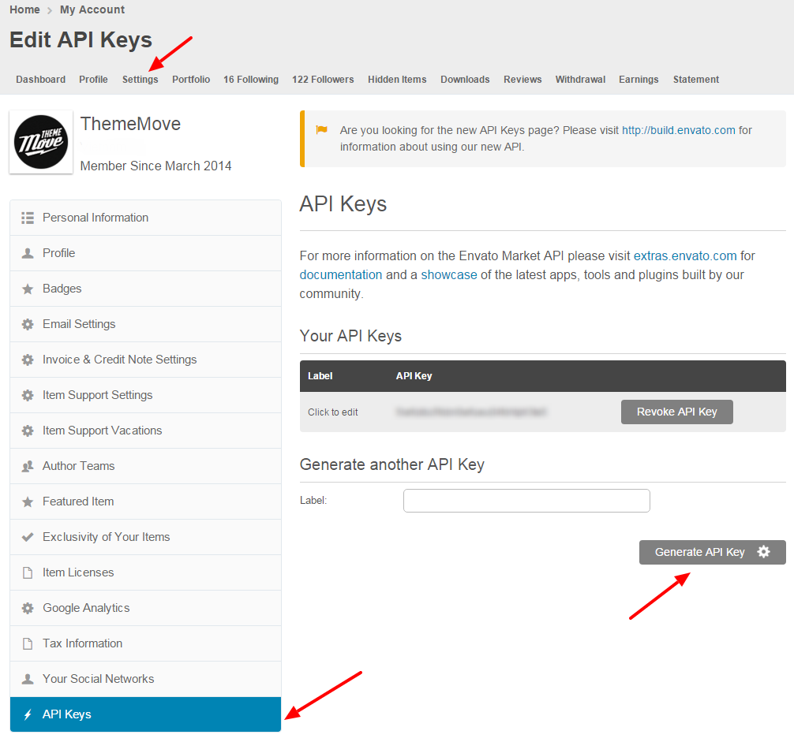
Step 2 – Download Envato ToolKit, install and activate this plugin. A new menu item, “Envato Toolkit”, will appear in the admin sidebar. Click on the sidebar link and enter your marketplace username and secret API key. Click “Save Settings.” All of your theme purchases will now appear on this page after it refreshes.
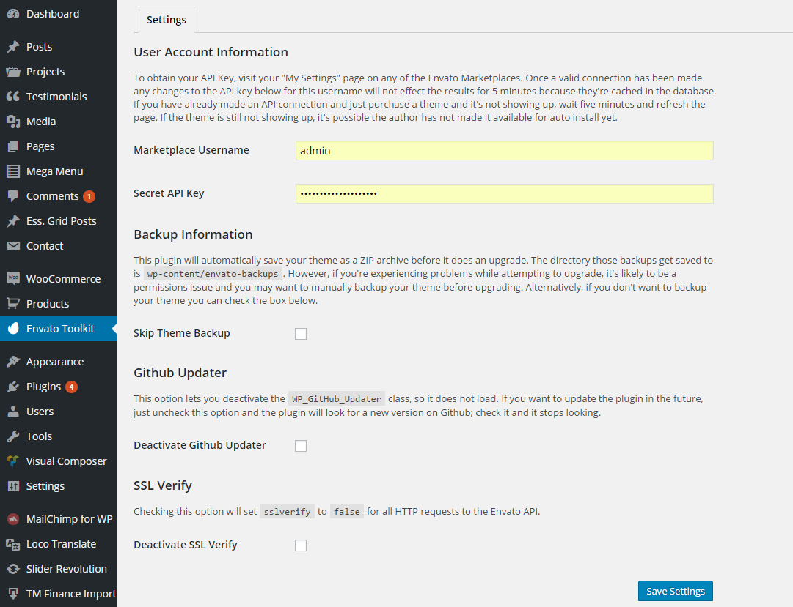
Step 3 – The plugin will now alert you to theme updates – so long as you check the toolkit settings regularly. Click on install automatically beside each of your themes to automatically update them. The toolkit settings page also allows you to install themes that you haven’t already uploaded to your site, delete ones you don’t use and view version details. You can also set up theme backups.
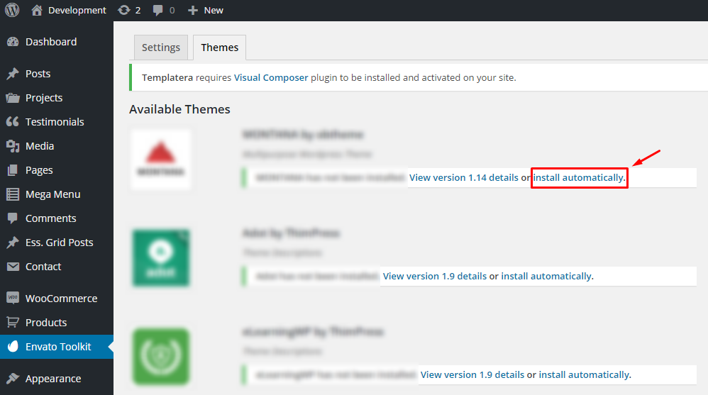
Important! Always Use a Child Theme. Updating your themes shouldn’t affect any customization to your website as long as you’re using a child theme.
Build Your Site
WordPress Configuration
You can adjust WordPress settings as follows:
1. You can set Site Title, Tagline in Settings > General.

2. You can set Blog pages show at most, Front Page displays in Settings > Reading.
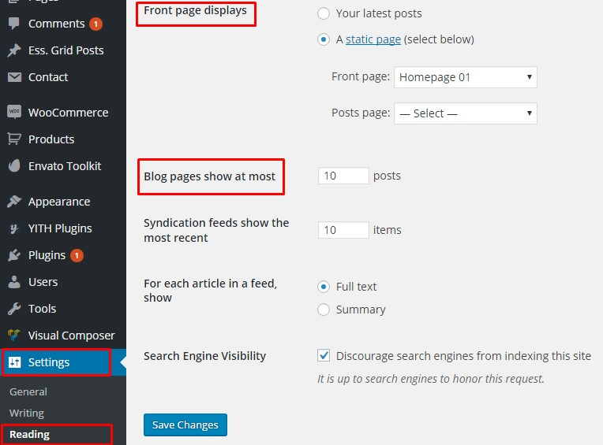
3. You can set Discussion settings in Settings > Discussion.
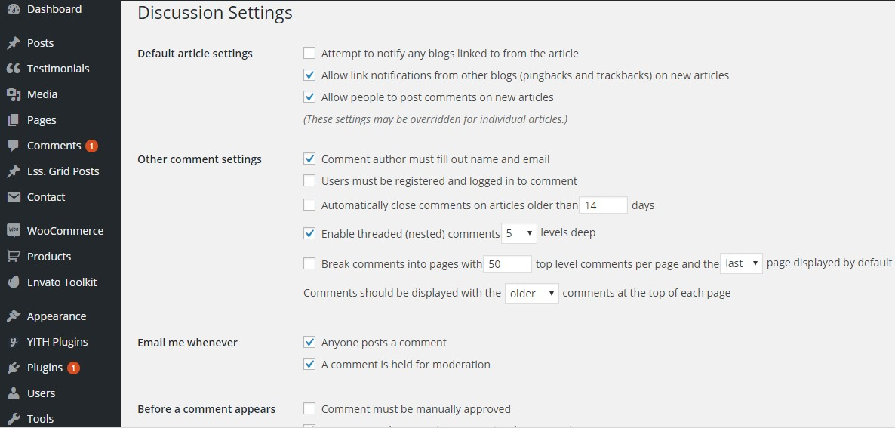
4. You can set Image sizes in Settings > Media.
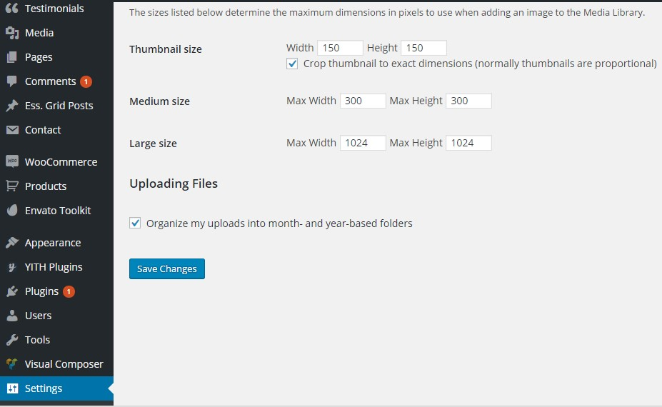
We used the following sizes on our demo sites:
Thumbnail size: 150 x 150
Medium size: 300 x 300
Large size: 1024 x 1024
5. You should ensure that a non-default permalink setting is selected, e.g. Day and name in Settings > Permalinks.
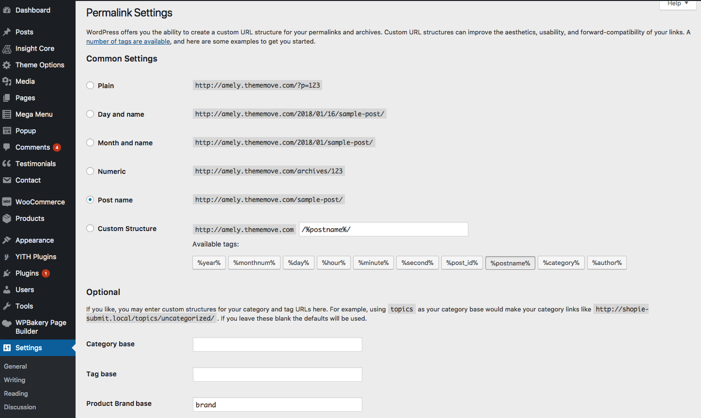
Theme Options
Amely comes with advanced settings panel that is loaded with options.
We have the options organized into logical tabbed sections, and each option has a description of what it will do on the front end. Because of the sizable amount of options Amely provides, we cannot go over them in full detail here in our documentation. We encourage you to please take some time and navigate through each tab to see what we offer.
Go to Theme Options on admin sidebar to access the setting options. See below for screenshot of our Customize panel.
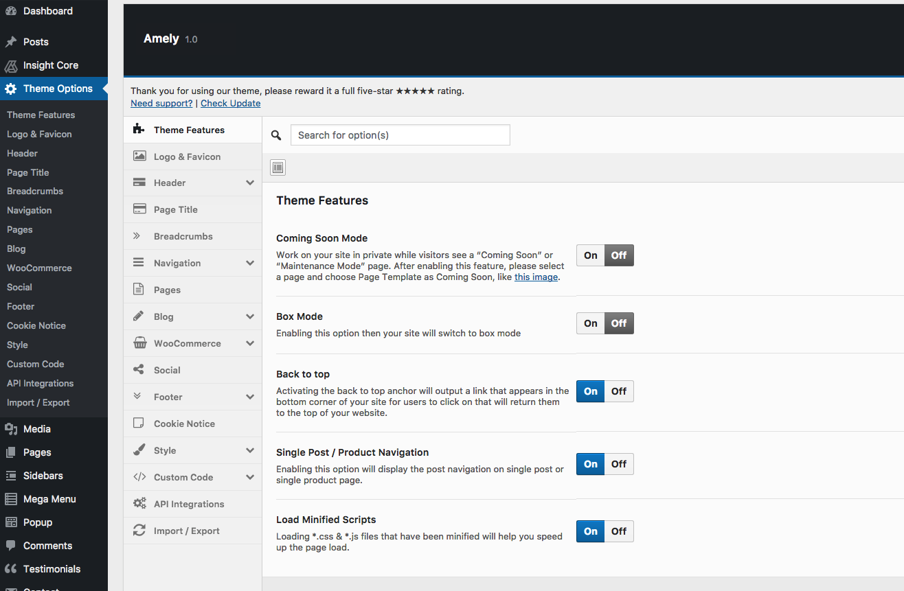
Page
Create A New Page
Step 1 – Navigate to Pages in your admin sidebar and click Add New option.

Step 2 – Enter a new name for your page, then find the Page Attributes box on right side to set your Parent page.

Step 3 – Scroll down to Settings box and hit each tab of Top Bar, Header, Page Title, Sidebar Options, Page Meta to make settings.

Use Visual Composer To Build Page
Step 1 – Choose Backend Editor or Frontend Editor to edit your page. Backend Editor gives you the backend interface while Frontend Editor gives you the user interface. Visual Composer works with both.

Step 2 – Choose Add Element to start adding our premade elements to your new page.

Step 3 – Choose elements you want to add to your new page in the element box and start editing them.

Explore more about Visual Composer here.
How To Change Page Title
Step 1 – Go to Pages > All Pages. Then point at the page you want to edit. You will see the Quick Edit option.

Step 2 – Edit the title as you want. Delete the current slug. Then hit Update. It will automatically generate new slug for your page.

You can also edit some other options such as parent, template, status... If you want to edit more options, hit Edit instead of Quick Edit.
Menu
Create A New Menu
Step 1 – Navigate to Apperance > Menus in your admin sidebar and click Create a new menu option.

Step 2 – Give your menu a name, then hit Create Menu.

Step 3 – Choose menu items you want to add from the left and hit Add to Menu. Assign your new menu to 01 of 04 available areas: primary, top bar menu, language switcher, currency switcher.
Note: For Language and Currency, they’re already on demo under menu types. If you set up switchers, they are gonna be switchers.
Then hit Save Menu

Your new menu has been created:

How To Edit A Menu
Step 1 – Go to Appearance > Menus on admin sidebar, select a menu to edit.

Step 2 – Rename menu name as you wish. If you want to add more menu items, choose them from the left and hit Add to menu.

With each menu item, you can rename or drag to make it sub-menu.

Remember to hit Save Menu when you finish editing.
How To Add An Icon To A Menu Item
Step 1 – Go to Appearance > Menus. Enlarge the Screen Options and hit CSS Classes.
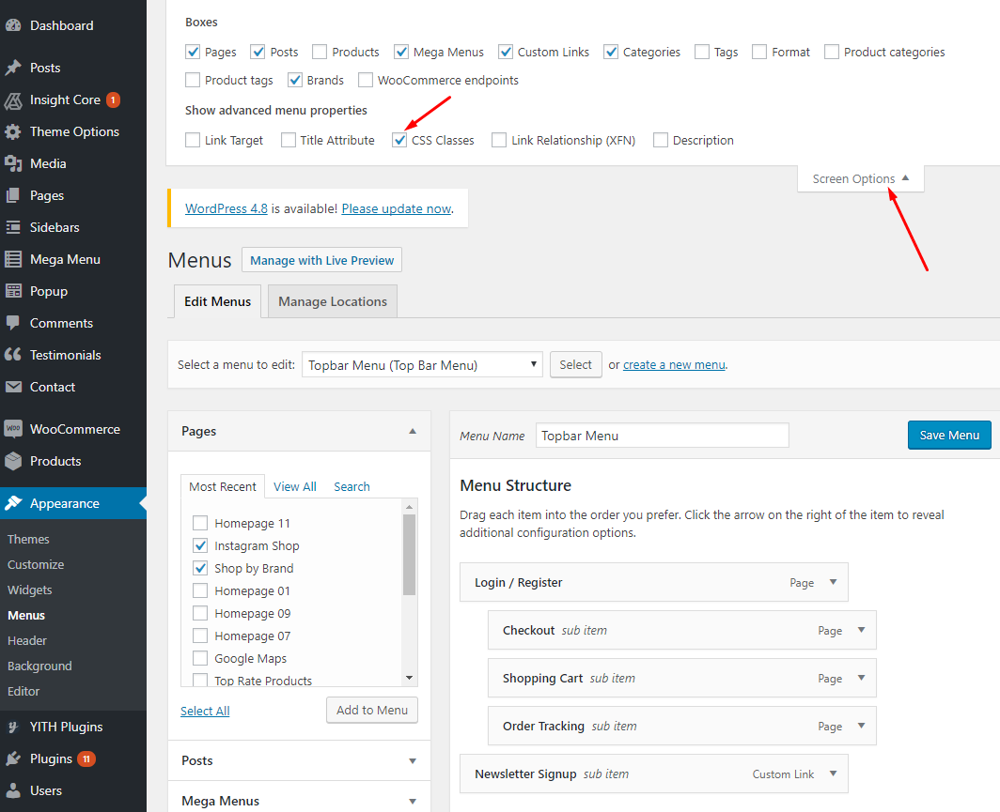
Step 2 – To get the icon you want, head to this site, tick on the icon you want. Then get the class name and paste on CSS Classes of the menu item you want.
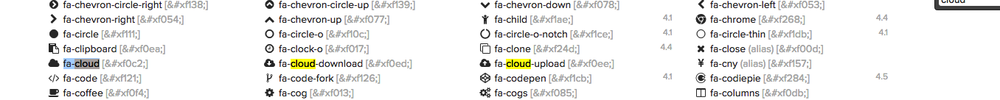

Remember to hit Save Menu. Head to your site to see the effect.
How To Customize Mega Menu
Step 1 – Mega menus in a theme can be configured using WPBakery Page Builder (formerly Visual Composer) plugin, from the admin Dashboard, navigate to Mega Menu. Here you can make adjustments or add a new one:

You can use WPBakery Page Builder (Visual Composer) to edit mega menus just as normal pages.
Tip: To edit the content of the menu in a more effective way, switch to Text mode.

Step 2 – To add a new mega menu to your theme, navigate to Appearance >> Menus then choose among available menus for a suitable place for your new mega menu:

Go to Screen Options and put a tick to the box of Mega Menus to display it:

Finally, select the mega menus that you need (tick in the box) then click Add to menu, or you can drag and drop them to the desired order of display, then hit Save Menu to save all of your changes.

And voila, your mega menu is ready.
Header
Header Setup
You can configure header options by following this direction Theme Options > Header. Hit each tab: Top bar, Header layout, Header Appearance, Search, Wishlist, Shopping cart and follow the detailed instructions inside. They are very clear and easy to follow.

Remember to hit Save & Publish when you finish.
Slider
Create A New Slider
Step 1 – Navigate to Slider Revolution > New Slider.

Step 2 – Enter a Slider Name (1) and Slider Alias (2), and click "Save Settings".


Quick Note:
- Before saving, you can select several of the slider's settings from this page. But choosing these settings are not required to officially create a new slider, as they can be adjusted afterward.
- The slider's "Title" can be anything, but the "Alias" should not have any special characters or spaces (but dashes and underscores are ok).
Step 3 – You'll now be redirected to the plugin's main admin page where you'll see your new slider listed.
Hover to your new slider, a pen which means "Edit" will appear. Choose that to start building your slider.
Edit Your Slider
Step 1 – Go to Slider Revolution and hit the slider you want to edit.

Step 2 – Choose Main/Background Image if you want to change it, then hit Media Library or Object Library depending on where you want to get your image.

Navigate to other tabs: General Settings, Thumbnail, Slide Animation, Link & Seo, Slide Info, Nav. Overwrite to customize. You just have to follow those comprehensive instructions.
Post
Create A New Post
Step 1 – Navigate to Posts > Add New in your WordPress admin sidebar.
Step 2 – Create a title, and insert your post content in the editing field.
Step 3 – For a video/audio post, just simply paste the video/audio URL into the Embed Code field.
Step 4 – Add Categories from the right side. Categories is meta information you create for the post. Each category is a meta link that your viewer can click to view similar type of posts. To assign it to the post, check the box next to the Category name. You can also access and edit Categories from the Post sidebar item in your WordPress admin sidebar.
Step 5 – Add Tags from the right side. Tags is meta information you create for the post. Each tag is a link that your viewer can click to view similar type of posts. Type the name of the tag in the field, separate multiple tags with commas. You can also access and edit Tags from the Post sidebar item in your WordPress admin sidebar.
Step 6 – For a single image, click the first Featured Image Box, select an image and click the Set Featured Image button.
Step 7 – You can also customize Page Title & Sidebar Options in Settings.
Step 8 – Once you are finished, click Publish to save the post.
Here is the screenshot that shows the various areas of the blog post page:

WooCommerce
Set Up An Online Store
In this section, you’ll learn to set up an online store with WooCommerce plugin
Step 1 – Be sure that you’ve installed WooCommerce. Check the plugin section.

If you haven’t install or activate WooCommerce, get back to Plugin Installation section.
Step 2 – Configure general settings for your WooCommerce store such as currency, tax, checkout, shipping, etc. by navigating to WooCommerce > Settings

Step 3 – To create new order: Hit Orders > Add Order.

Step 4 – To create new Coupon: Hit Coupons >> Add Coupon.

For more settings of WooCommerce, click here.
Customize Your Online Store
Step 1 – Navigate to Theme Options > WooCommerce.

Step 2 – Here you will see three tabs: General, Shop Page, Single Product Page. Go to General for general settings. Go to Shop Page to set up options for the whole shop page. And go to Single Product Page to set up options for single product. You just have to follow the comprehensive instructions inside.

Attribute Swatches
Step 1 – Add a new attribute.
To add new attributes to a variable product on your WooCommerce shop, from admin Dashboard, navigate to WooCommerce >> Settings >> Attribute Swatches to check if the attribute that you want to add is available or not.

Here we’ve already had 3 attribute options: color, textiles & color, material. If these aren’t what you want, click Add New Attribute Swatch, then a new box appear for you to enter a new attribute for your products.
At the right corner of the box are some buttons for adjusting your product attributes: the ˄˅ button is for expanding/minimizing the attribute box, the arrow button is for reordering these attributes (drag & drop to reorder), and recycle bin button is for deleting an attribute.
In case you want the attribute to be displayed on Shop Page, tick in the box Show on products loop. If this is unchecked, your new attribute can’t be seen from the Shop Page, so customers won’t be able to see the product variations.

After filling in all the needed for the new attribute, remember to click Save Changes to save all of your changes.
Step 2 – Add a new variable product
From the admin dashboard, navigate to Products >> Add New then fill in the product information, including product name, description, etc.

Scroll down to Product data, in the drop down menu, choose Variable product then all the available attributes for the newly added product will be displayed.

Below is the instructions on adding the color variations. To add new attribute variations, you need to add the attributes first.
Click Attributes, in the drop down menu, choose Color then hit Add. You can add color values from available options (Select All or Select one), or add a new color by clicking Add New button, enter a name then hit OK to finish.

Note: That you can add multiple variations by repeatedly click in the values box and choose from the added colors in the box. Remember to put a tick in the box Used for variations. After that, click Save Attributes before proceeding.
Now click Variations, in the drop down menu choose Create variations from all attributes then hit Go, in the confirmation box, click OK.

Click in a variation, you can set all the details for it, including variation image, product number, prices, etc. Hit Save Changes when done.

Tip: If all variations of your products have the same price, click in Add variation drop down menu, choose Set a regular price then hit Go to set a general price for all variations and save yourself some time. Hit Save changes before closing a variation.

Navigate to the right sidebar, click in the Product Image box, select a featured image for your product then hit Set product image. Finally, click Publish to finish. You can click View Product or go to the Shop page to preview your product.
You can see that everything is set, except for the color variations. To make them visible, you need to set up the color for your newly added attributes. Go to WooCommerce >> Settings >> Attribute Swatches then click in the Color attribute, scroll down to find the newly added color variations.
Hit Select color for each variation, if you don’t have the exact code, choose the closest color in the palette.
Then hit Save Changes and check if it’s done in the shop page.

FAQs
What Are Common Installation Issues
When you install Amely, you may encounter some problems. Check for clarifications here.
How To Change Color
First, you need to go to Theme Options. These are parts that have color options:
1- Header > Top Bar, Header Appearance, Search, Wishlist, Shopping Cart
2- Page Title
3- Navigation > Main Menu
4- Footer
5- Style > Colors
6- Colors
How To Change Currency
Hit Apperance > Menus.
Select Currency Menu in select box.
Drag each item into the order you prefer.
Click the arrow on the right of the item to reveal additional configuration options.

How To Edit A Widget
Hit Appearance > Widgets. Choose a widget you want to edit.

Then choose its area as you wish and hit Add Widget.

Then go to the right where you will notice a just-added widget. In this case, Search on Footer|#2. Type information and hit Save.

Then go to your site and see the effect.
How To Change Contact Information
There are two ways to change contact information:
1 - Hit Appearance > Widgets. Then go to the right side and find Footer|#1 and edit your information. Remember to hit Save when you finish.

2 - Hit Appearance > Customize > Widgets > Footer|#1. Change your information then hit Save & Publish

How To Change Logo
Hit Appearance > Customize > Logo & Favicon. Here you can set your logo, alternative logo, logo on mobile devices
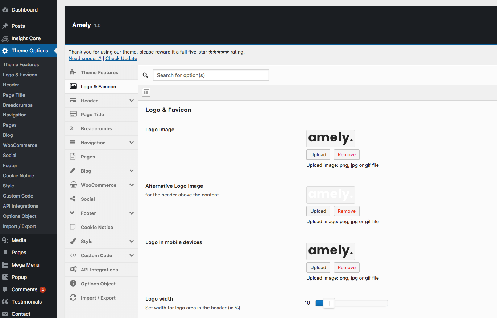